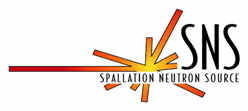
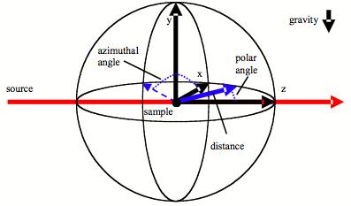

SNS Common Libraries Documentation
Interface Documentation (Version: 1.3.2)
C++
Python
Tutorials
Python Abstraction Layer
Rules of the Library
To provide the greatest inter-language and inter-facility operability, the
base functionality of the SNS Common Libraries will be implemented as C++
functions. Every C++ function will have an analogous function call in the
library's Python Abstraction Layer.
The C++ functions will follow a set of rules that will provide the
application programmer with confidence that the library is well-formed, does
not affect outside systems and does not maintain state. The rules are:
- There will be no global/package variables.
- There will be no side effects.
- They will be thread safe.
- They will neither allocate nor de-allocate any persistent resources. This
allows for allocating (and de-allocating) temporary memory for
calculations.
- There will be at least one smoke test for every function.
- Functions will create no heap memory. The functions will need to be passed
the arguments, space for the results, and space for any temporary storage
needed. To notify the caller of how much memory is needed for temporary
space, any function that uses temporary space may have a related utility
function that returns information on the amount of temporary storage
needed. If the user passes in null pointers for the temporary storage the
function is intended to allocate and de-allocate what is needed.
- The functions will return a warning string when non-fatal errors are
encountered.
Template Types
In various sections of the library the user will encounter the template types:
- NumT - Any numeric type
- T - Any type that vector supports
Function Naming Conventions
To make the library easier to navigate without documentation there are some
naming conventions that were created.
- _ncerr This extension denotes that the function calculations
the uncertainties assuming non-correlated errors
Definitions
Histogram
Some functions in the library assume that the information supplied is a
histogram. A histogram is defined as a list of bin boundaries and a weight
contained with within the boundaries. In practical terms this means that the
independant variable array has one more value than the function array.
The other requirement of histograms is that their independent axis is
monotonically increasing. Note that this does require that the bins are of
equal size.
Library Coordinate System

The figure shown above shows the coordinate system assumed by the SNS Common
Libraries. This system was chosen to coincide with the coordinate system
chosen for NeXus.